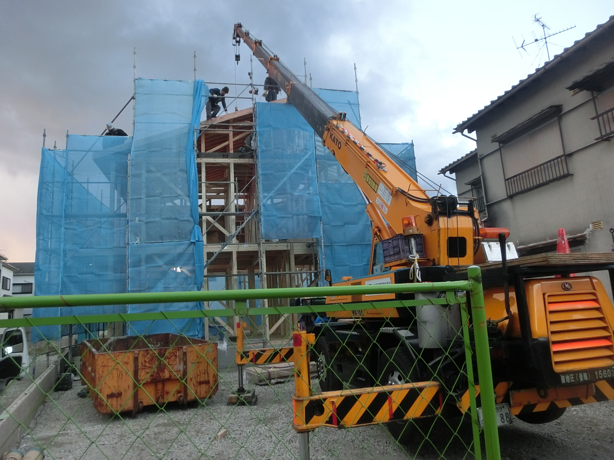

公司介绍
以私人标准对待每一栋住宅的关西工务店。
自1987年起，匠工务店在泉佐野持续营造住宅，核心想法很简单：以像建造自家一样的真诚，打造健康住宅。
理念
前进与努力，最终落到日常舒适。
公司的基础理念是为居住者建造健康住宅。实际做法包括理解气候的施工、谨慎的材料判断，以及以本地经验支持新建与翻新。

重点不是看起来日本，而是在日本住得好。
对全球客户来说，在日本建房常常难以远程理解。本网站让决策路径更清晰：公司是谁、能做什么、舒适如何被设计，以及如何开始咨询。
公司资料
公司概要
公司名称株式会社匠工务店
创立1987年4月
代表今井圣子
资本金1000万日元
团队8人，2025年4月1日时点
地址日本大阪府泉佐野市日根野5891，邮编598-0021
业务内容定制住宅、翻新改造、店铺与办公室施工、一般建筑工程、土木工程
许可综合建设业、一級建筑士事务所、不动产业许可